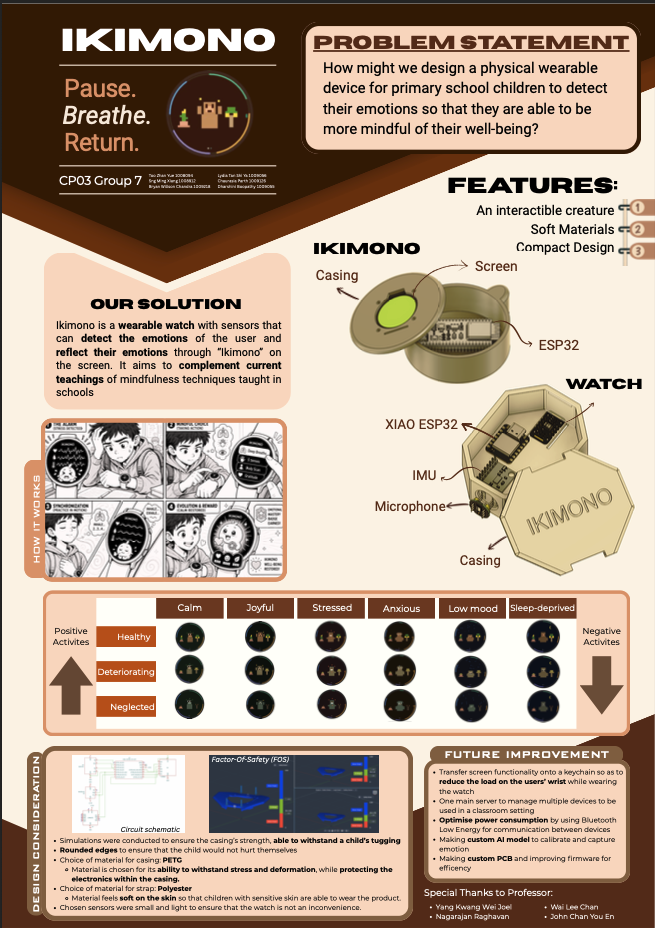
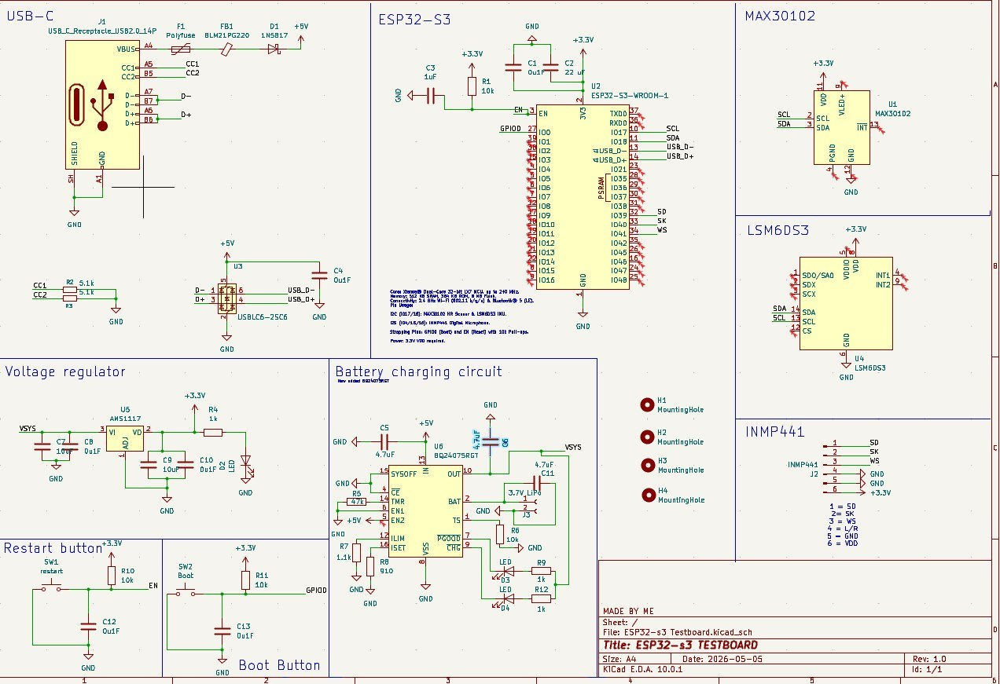
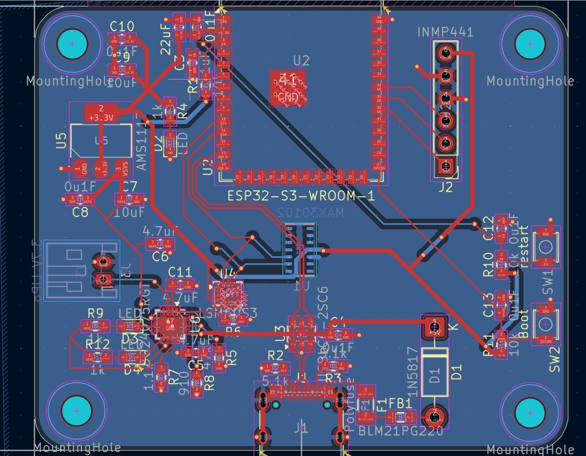
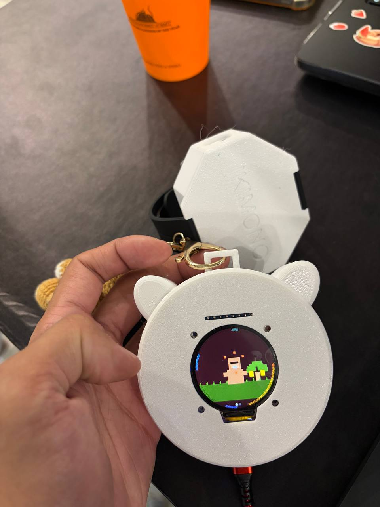
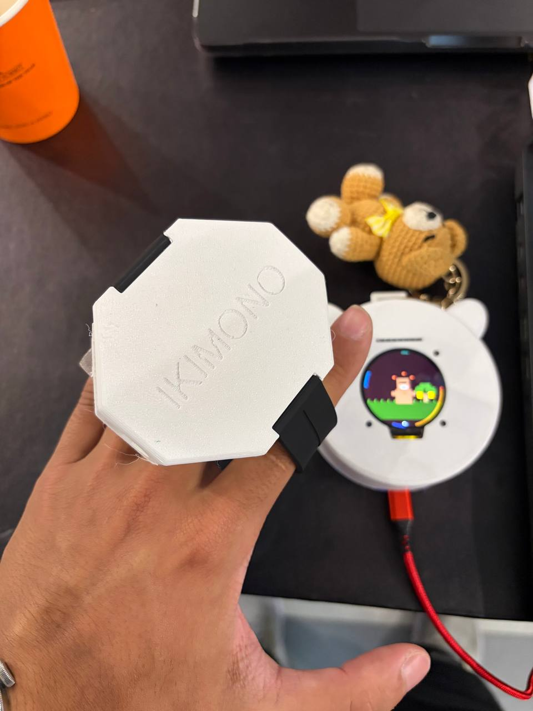
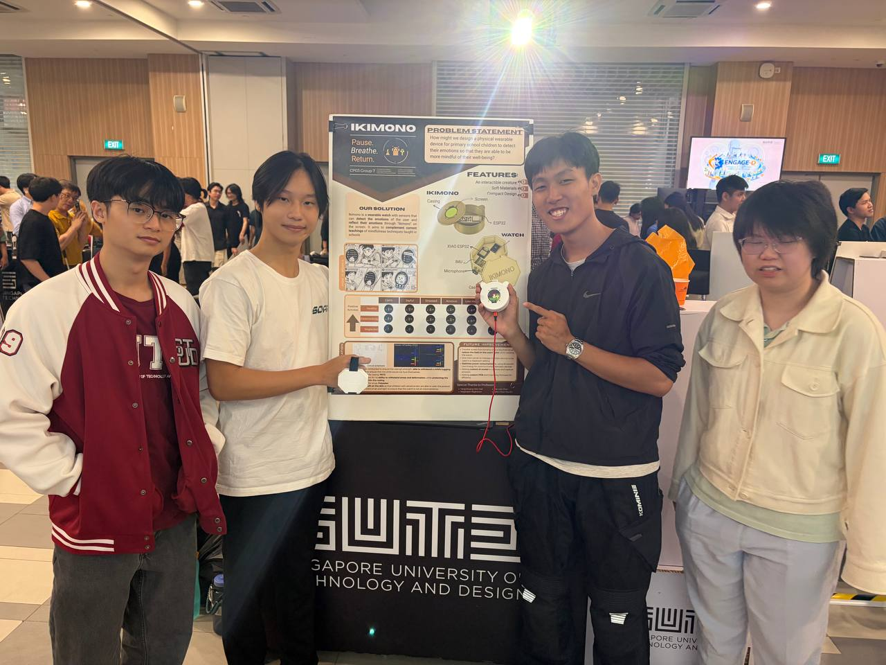

Ikimono
Emotional Intelligence Wearable for Children
/ Project Overview
Ikimono is a wearable watch designed for primary school children to help them detect and manage their emotions. Using integrated physiological sensors, the device reflects the user's emotional state through an interactable creature on the screen, complementing mindfulness techniques taught in schools.
/ Project Concept

Conceptual poster detailing the "How It Works" workflow and design considerations.
/ System Demonstration
The showcase slides used giving details on the project
/ My Contributions
01. IoT Implementation & Firmware
Responsible for the core IoT architecture, integrating multi-modal sensors with the ESP32-S3 and developing the firmware for real-time data processing.
View IoT Source Code on GitHub ↗02. Electronics Schematic Design
Engineered the testboard schematic featuring a power management system with USB-C input, a BQ24075 battery charging circuit, and an AMS1117 voltage regulator.

The design integrates a MAX30102 Heart Rate sensor, LSM6DS3 IMU, and an INMP441 Microphone for comprehensive bio-sensing.
03. PCB Design & Optimization
Translated the schematic into a compact PCB layout optimized for a wearable form factor. Focused on signal integrity for the ESP32-S3 module and strategic placement of mounting holes for the watch casing.

/ Hardware Prototypes
Iterative physical models demonstrating the wearable form factor, custom 3D-printed casing, and real-time UI integration with the ESP32 hardware.



Project Status: In Development
This project has transitioned into a second phase of development with an external partner. While the core "Ikimono" V1 prototype focused on wearable bio-sensing, the partnership is facilitating a major pivot to expand the system's impact.
/ Team & Credits

Beyond the hardware, I provided holistic support in system architecture and technical documentation to ensure project cohesion.
Development Team:
- Bryan Willson Chandna
- Lydia Tam
- Chaurasis Parth
- Sng Ming Xiang